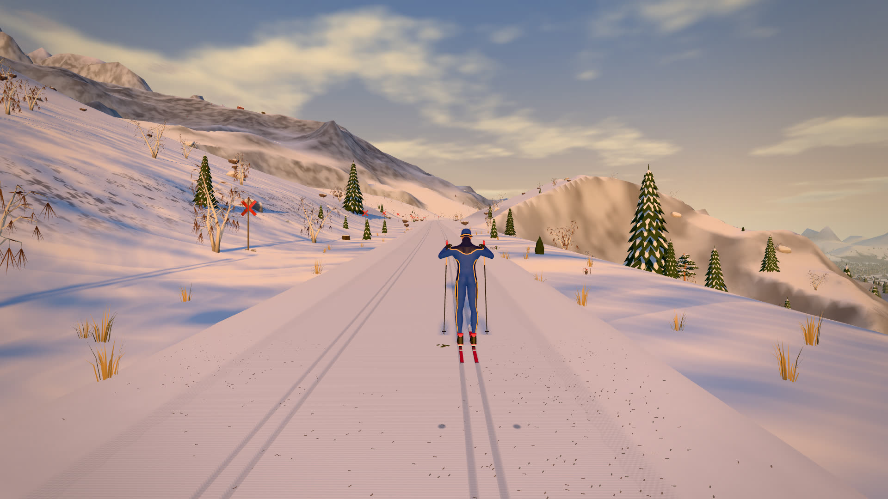
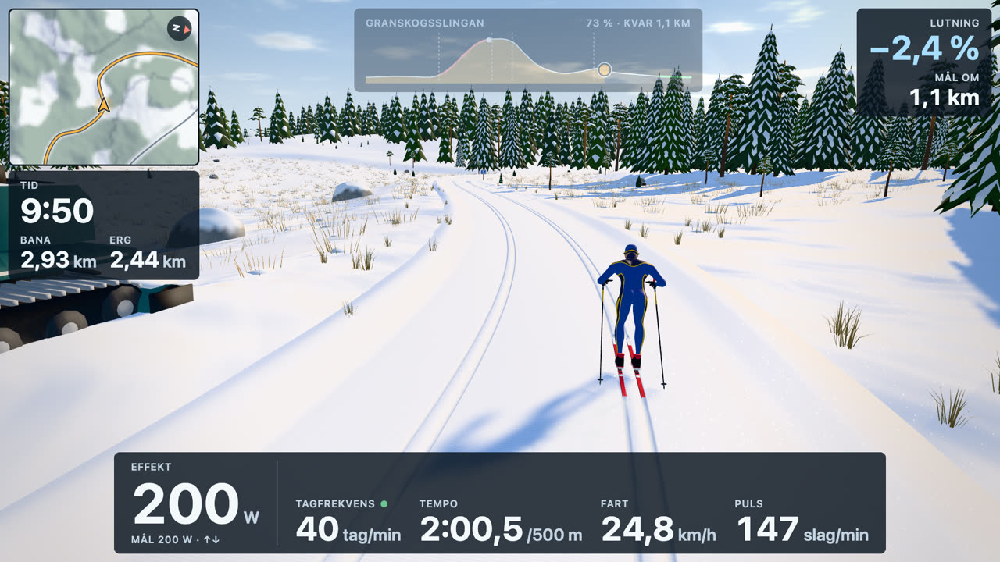
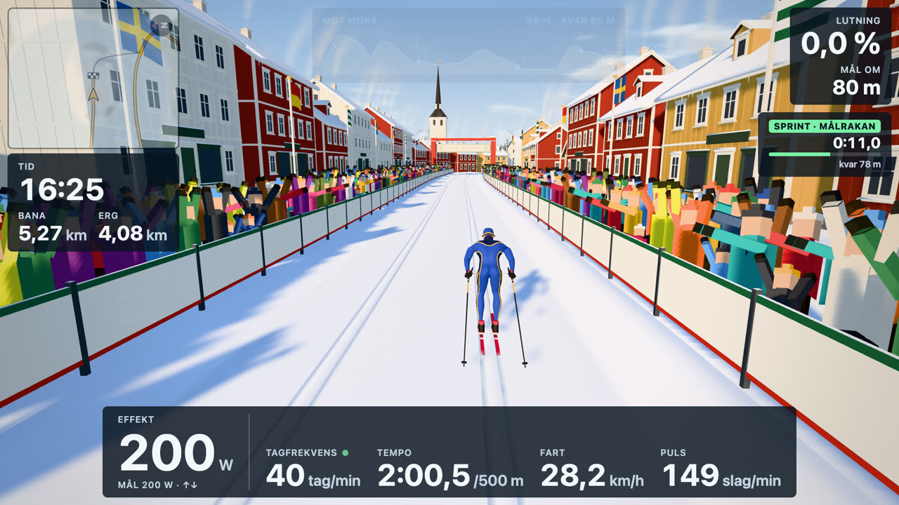
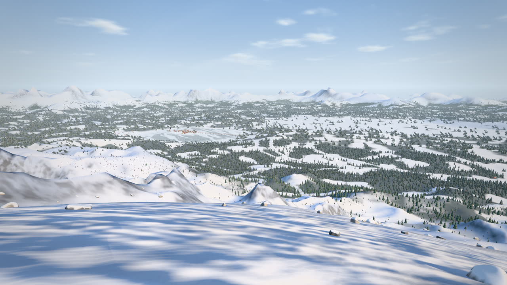
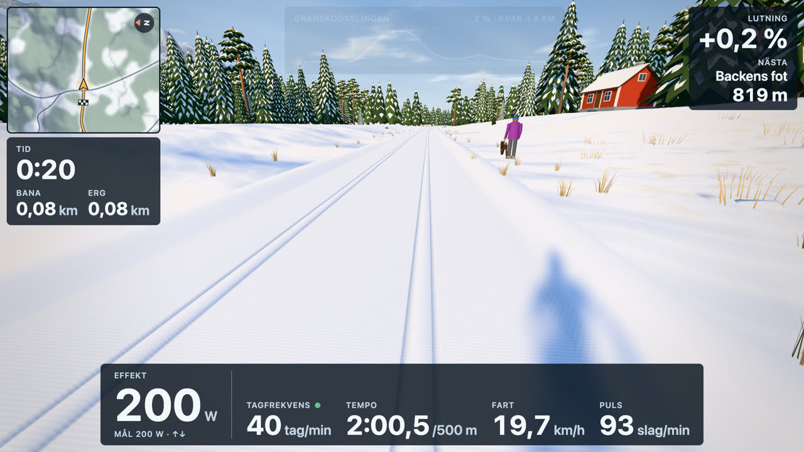

Mac
macOS 12 eller senare, Apple Silicon och Intel i samma app (.dmg).
Ladda ned för Mac
Gratis · öppen källkod · Mac och Windows
Längdskidåkning i 3D för Concept2 SkiErg. Åk genom skog, över fjäll och mot Mora i kvällsljus, eller skicka din effekt till Zwift och SYSTM som en cykeleffektmätare över Bluetooth.
Finns för Mac och Windows · Så installerar du




macOS 12 eller senare, Apple Silicon och Intel i samma app (.dmg).
Ladda ned för MacWindows 10 eller 11, 64 bitar (installationsprogram, .exe).
Ladda ned för WindowsTidigare versioner och vad som är nytt finns bland versionerna på GitHub.
Staka är gratis och har ingen betald utvecklarsignatur från Apple eller Microsoft. Därför varnar systemet första gången, och du godkänner appen själv en gång. Det tar en minut.
Staka-mac.dmg och dra Staka till
Program.
Det betyder att macOS har satt karantän på den nedladdade appen, inte att filen är trasig. Flytta Staka till Program, öppna Terminal och kör:
xattr -cr /Applications/Staka.appStarta sedan Staka igen.
Staka-windows.exe. Säger webbläsaren att filen är ovanlig, välj
Behåll.
Bluetooth-sändningen kräver en dator med Bluetooth Low Energy.
Anslut SkiErgens monitor (PM5) med USB-kabeln till datorn, starta Staka och välj ett pass. Du kan också prova med simulerad åkning utan SkiErg.
Staka är gratis och byggt med programvara med öppen källkod, bland annat Electron, Chromium, React och three.js. Licenstexterna följer med i appen (Profil → Licenser och erkännanden) och finns här:
Concept2 och SkiErg är varumärken som tillhör Concept2, Inc. Zwift tillhör Zwift, Inc. och SYSTM tillhör Wahoo Fitness. Staka är ett fristående projekt och inte knutet till, sponsrat av eller godkänt av dem.